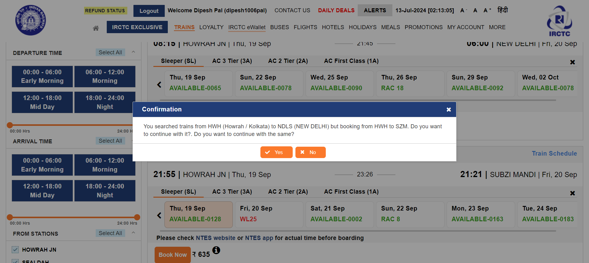

-
Train Ticket Book from IRCTC Website
2:11:56 am / 00:04:46:675 Fail
Train Ticket Book from IRCTC Website
07.13.2024 2:11:56 am 07.13.2024 2:16:43 am 00:04:46:675 · #test-id=1FailEnd to End Ticket booking from IRCTC WebsiteFailEnd to End Ticket booking from IRCTC WebsiteGiven User is present in IRCTC WebsiteWhen User will be login through "dipesh1006pal" and "Namita@123"And Purchase Ticket from "HWH" to "NDLS" on "19-September-2024" and class "SL"And Compare Train "POORVA EXPRESS" and "NETAJI EXPRESS" where ticket is availableAnd Fill the passengers details following:Debashis Soma Liza StepDefinations.HooksUtils.add_Screenshot_Report(io.cucumber.java.Scenario)failstepThen Make the Payment and Confirm ticket bookStep skippedPassEnd to End Ticket booking from IRCTC WebsiteGiven User is present in IRCTC WebsiteWhen User will be login through "dipesh1006pal" and "Namita@123"And Purchase Ticket from "HWH" to "NDLS" on "19-September-2024" and class "3A"And Compare Train "POORVA EXPRESS" and "NETAJI EXPRESS" where ticket is availableAnd Fill the passengers details following:Debashis Soma Liza Then Make the Payment and Confirm ticket bookPassEnd to End Ticket booking from IRCTC WebsiteGiven User is present in IRCTC WebsiteWhen User will be login through "dipesh1006pal" and "Namita@123"And Purchase Ticket from "SHALIMAR" to "BALESHWAR" on "15-October-2024" and class "2A"And Compare Train "SHM VSKP SF EXP" and "COROMANDAL EXP" where ticket is availableAnd Fill the passengers details following:Debashis Soma Liza Then Make the Payment and Confirm ticket book -
Train Ticket Book from IRCTC Website after target one special train
2:16:43 am / 00:02:10:363 Fail
Train Ticket Book from IRCTC Website after target one special train
07.13.2024 2:16:43 am 07.13.2024 2:18:54 am 00:02:10:363 · #test-id=45FailEnd to End Ticket booking from IRCTC Website one special trainFailEnd to End Ticket booking from IRCTC Website one special trainGiven User is present in IRCTC WebsiteStepDefinations.HooksUtils.add_Screenshot_Report(io.cucumber.java.Scenario)When User will be login through "dipesh1006pal" and "Namita@123"Step skippedAnd Purchase Ticket from "HWH" to "NDLS" on "19-September-2024" and class "3A"Step skippedAnd Book "POORVA EXPRESS" Ticket for your journeyStep skippedAnd Fill the passengers details following:Debashis Soma Liza Step skippedThen Make the Payment and Confirm ticket bookStep skippedStepDefinations.HooksUtils.Close_Browser()FailEnd to End Ticket booking from IRCTC Website one special trainGiven User is present in IRCTC WebsiteStepDefinations.HooksUtils.add_Screenshot_Report(io.cucumber.java.Scenario)When User will be login through "dipesh1006pal" and "Namita@123"Step skippedAnd Purchase Ticket from "BPL" to "HWH" on "18-September-2024" and class "2A"Step skippedAnd Book "BPL HWH EXP" Ticket for your journeyStep skippedAnd Fill the passengers details following:Debashis Soma Liza Step skippedThen Make the Payment and Confirm ticket bookStep skippedStepDefinations.HooksUtils.Close_Browser()FailEnd to End Ticket booking from IRCTC Website one special trainGiven User is present in IRCTC WebsiteStepDefinations.HooksUtils.add_Screenshot_Report(io.cucumber.java.Scenario)When User will be login through "dipesh1006pal" and "Namita@123"Step skippedAnd Purchase Ticket from "PATNA JN" to "NDLS" on "18-September-2024" and class "SL"Step skippedAnd Book "SHRAMJEEVI EXP" Ticket for your journeyStep skippedAnd Fill the passengers details following:Debashis Soma Liza Step skippedThen Make the Payment and Confirm ticket bookStep skippedStepDefinations.HooksUtils.Close_Browser()
-
org.openqa.selenium.ElementNotInteractableException
1 tests
org.openqa.selenium.ElementNotInteractableException
1 failedStatus Timestamp TestName Fail 02:12:54 am And Fill the passengers details following: Train Ticket Book from IRCTC Website.End to End Ticket booking from IRCTC Website.And Fill the passengers details following: -
org.openqa.selenium.WebDriverException
3 tests
org.openqa.selenium.WebDriverException
3 failedStatus Timestamp TestName Fail 02:17:27 am StepDefinations.HooksUtils.Close_Browser() Train Ticket Book from IRCTC Website after target one special train.End to End Ticket booking from IRCTC Website one special train.StepDefinations.HooksUtils.Close_Browser()Fail 02:18:10 am StepDefinations.HooksUtils.Close_Browser() Train Ticket Book from IRCTC Website after target one special train.End to End Ticket booking from IRCTC Website one special train.StepDefinations.HooksUtils.Close_Browser()Fail 02:18:54 am StepDefinations.HooksUtils.Close_Browser() Train Ticket Book from IRCTC Website after target one special train.End to End Ticket booking from IRCTC Website one special train.StepDefinations.HooksUtils.Close_Browser() -
org.openqa.selenium.NoSuchWindowException
6 tests
org.openqa.selenium.NoSuchWindowException
6 failedStatus Timestamp TestName Fail 02:16:43 am Given User is present in IRCTC Website Train Ticket Book from IRCTC Website after target one special train.End to End Ticket booking from IRCTC Website one special train.Given User is present in IRCTC WebsiteFail 02:17:27 am StepDefinations.HooksUtils.add_Screenshot_Report(io.cucumber.java.Scenario) Train Ticket Book from IRCTC Website after target one special train.End to End Ticket booking from IRCTC Website one special train.StepDefinations.HooksUtils.add_Screenshot_Report(io.cucumber.java.Scenario)Fail 02:17:27 am Given User is present in IRCTC Website Train Ticket Book from IRCTC Website after target one special train.End to End Ticket booking from IRCTC Website one special train.Given User is present in IRCTC WebsiteFail 02:18:10 am StepDefinations.HooksUtils.add_Screenshot_Report(io.cucumber.java.Scenario) Train Ticket Book from IRCTC Website after target one special train.End to End Ticket booking from IRCTC Website one special train.StepDefinations.HooksUtils.add_Screenshot_Report(io.cucumber.java.Scenario)Fail 02:18:10 am Given User is present in IRCTC Website Train Ticket Book from IRCTC Website after target one special train.End to End Ticket booking from IRCTC Website one special train.Given User is present in IRCTC WebsiteFail 02:18:54 am StepDefinations.HooksUtils.add_Screenshot_Report(io.cucumber.java.Scenario) Train Ticket Book from IRCTC Website after target one special train.End to End Ticket booking from IRCTC Website one special train.StepDefinations.HooksUtils.add_Screenshot_Report(io.cucumber.java.Scenario)
-
@Smoketest
3 tests
@Smoketest
2 passed 1 failedStatus Timestamp TestName Fail 02:11:56 am End to End Ticket booking from IRCTC Website Train Ticket Book from IRCTC Website.End to End Ticket booking from IRCTC WebsitePass 02:12:58 am End to End Ticket booking from IRCTC Website Train Ticket Book from IRCTC Website.End to End Ticket booking from IRCTC WebsitePass 02:14:54 am End to End Ticket booking from IRCTC Website Train Ticket Book from IRCTC Website.End to End Ticket booking from IRCTC Website -
@Regressiontest
3 tests
@Regressiontest
3 failedStatus Timestamp TestName Fail 02:16:43 am End to End Ticket booking from IRCTC Website one special train Train Ticket Book from IRCTC Website after target one special train.End to End Ticket booking from IRCTC Website one special trainFail 02:17:27 am End to End Ticket booking from IRCTC Website one special train Train Ticket Book from IRCTC Website after target one special train.End to End Ticket booking from IRCTC Website one special trainFail 02:18:10 am End to End Ticket booking from IRCTC Website one special train Train Ticket Book from IRCTC Website after target one special train.End to End Ticket booking from IRCTC Website one special train
Started
Jul 13, 2024 02:11:55
Ended
Jul 13, 2024 02:18:54
Features Passed
0
Features Failed
2
Features
Scenarios
Steps
Timeline
Tags
| Name | Passed | Failed | Skipped | Others | Passed % |
|---|---|---|---|---|---|
| @Smoketest | 2 | 1 | 0 | 0 | 66.667% |
| @Regressiontest | 0 | 3 | 0 | 0 | 0% |